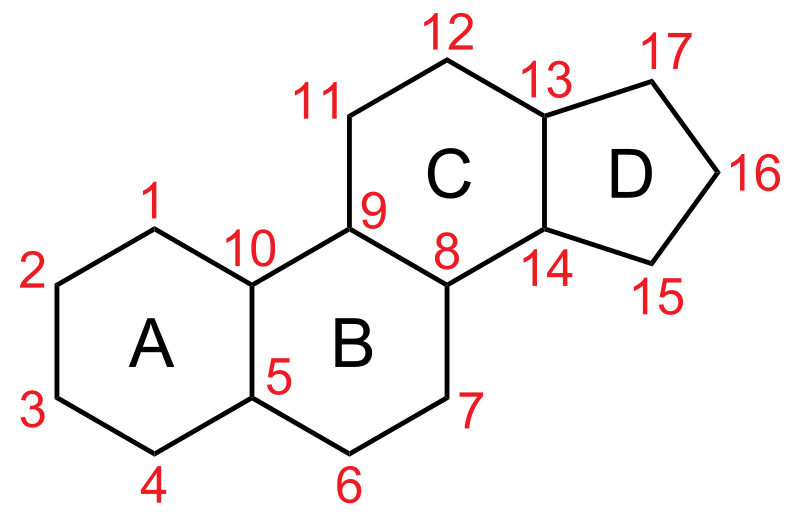

Steroidi
Lai saprastu, kas ir steroīdi, vispirms ir jārunā par hormoniem. Hormoni ir bioloģiski aktīvas vielas, kas regulē organisma darbību.
Tās izdala atsevišķas šūnas vai endokrīnie dziedzeri, piemēram, virsnieres, vairogdziedzeris, aizkuņģa dziedzeris, sēklinieki un olnīcas.
Steroīdos hormonus ražo virsnieru garoza, sēklinieki vai olnīcas, un tos iedala piecās grupās
– mineralokortikoīdi, glikokortikoīdi, androgēni, estrogēni un progestīni. Intensīvas fiziskās slodzes laikā palielinās augšanas hormona līmenis,
kas stimulē vielmaiņu, proteīnu sintēzi, šūnu dalīšanos un muskuļu augšanu.
Arī vīrišķo hormonu veidošanu un sekrēciju ietekmē veiktā fiziskā slodze, trenētība, ikdienas un sporta uzturs un vielmaiņa.
